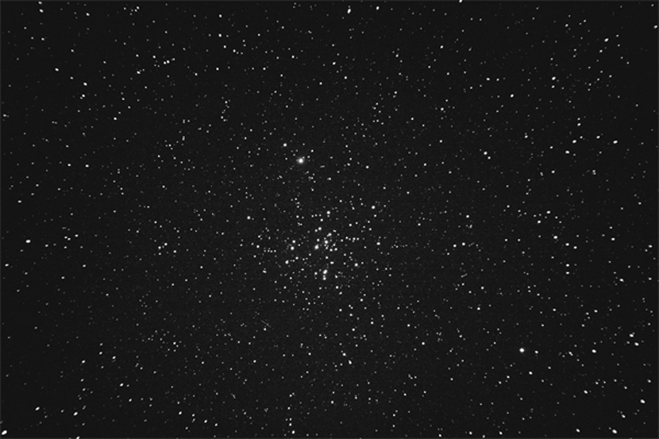

M41 - 疏散星团
天气不尽如人意。尝试用UHC-S滤镜进行拍摄，收到了不错的效果：星场的对比度得到提升，滑雪场的光害得到消减。M41是位于大犬座α天狼星不远处的一个迷人的疏散星团。只是可惜这张照片累计曝光不够多。
拍摄器材和参数：Canon 50D，望远镜：TAKAHASHI Sky90 UHC-S, 赤道仪 TAKAHASHI EM-11; Light Frames: 76s+215s+216s+219s, Dark Frames: 3.5min+3.5min+4min, Processed using DSS and PS. with the help of DSS and PS
作者：傅慎明 朱逢源。摄于浙江省安吉县天荒坪，2009年12月18日。